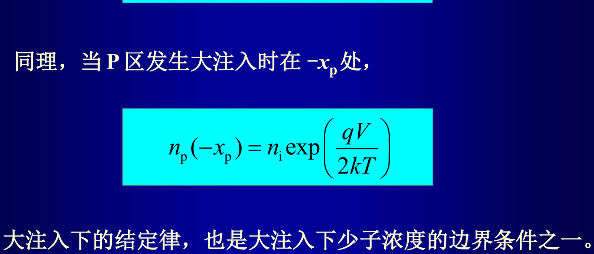

2.11 大注入效应
考纲第 11 条。小注入与大注入的判据、大注入自建电场的来源、Webster 效应、大注入结定律与转折电压。
一句话抓住
大注入的唯一关键是电中性条件：注入空穴太多时，多子电子必须"跟上"来维持电中性，于是 ，两种载流子必须有相同的浓度梯度，于是出现自建电场，导致 Webster 效应——扩散系数扩大一倍，结定律里的 变成 。
1. 小注入与大注入的判据#
PN 结正偏时势垒区两侧都有非平衡少子注入。由于静电感应，注入 的同时 N 区会出现相同浓度的 以维持大体电中性：
| 条件 | 可做的近似 | |
|---|---|---|
| 小注入 | 边界处 （或 P 区 ） | 少子忽略平衡部分 ；多子忽略非平衡部分 ；不需要考虑自建电场 |
| 大注入 | 边界处 （或 ） | 少子与多子都不能忽略平衡部分，，必须考虑自建电场 |
三个"题会怎么出"的点
- 哪一侧大注入？ 若 则 N 区发生大注入；若 则 P 区发生大注入。
- 最多只有一个区发生大注入：转折电压正比于 ，掺杂低的一侧转折电压低，所以只有低掺杂区可能发生大注入。课件进一步指出，两侧掺杂相同时属临界情形，结论是此时不发生大注入（考试按课件结论作答）。
- 自建电场的作用方向：对少子是加速场，对多子是减速场——这正是 Webster 效应的物理内涵。
2. 自建电场的来源#
在 N 区耗尽区边界附近， 要求两者有相同的浓度梯度、向同一方向扩散。但电子的来源与空穴不同——电子不可能像空穴那样从 P 区得到补充，所以实际上电子的浓度梯度略小于空穴的浓度梯度。电荷在空间上分离，形成一个电场 ：
- 使空穴向右漂移，加强原有扩散；
- 使电子向左漂移，抵消原有扩散。
利用 的条件求出该自建电场：
公式与图中的每个量
- —— N 区电子、空穴浓度（，大注入时两者近似相等）
- —— N 区平衡多子浓度（，小注入的参照基准）
- —— N 区过剩电子、过剩空穴浓度（，电中性要求二者相等）
- —— 大注入自建电场（，加速少子、减速多子）
- —— 电子电流密度（，大注入下近似为 0（电子被"挡住"））
- —— 电子、空穴迁移率（）
- —— 电子、空穴扩散系数（，）

3. Webster 效应#
把自建电场代回空穴电流密度方程：
必背结论
这个现象称为 Webster（韦伯斯脱）效应。
4. 大注入结定律与电流#
大注入时 ，故 ；结合耗尽区边界处 ：
再解扩散方程（特征长度换成 ）得 N 区少子分布，代回电流方程得到
与 §2.8 连起来看
小注入时中性区少子扩散电流正比于 ；大注入时正比于 。 这正是 §2.8 中 曲线出现三段斜率的第三段的来源，答题时要把这条因果链完整讲出来。
5. 转折电压（膝点电压）#
令小注入与大注入的空穴电流密度表达式相等，解出转折电压：
记住"低掺杂才大注入"
正比于 。掺杂低的一侧 低、先发生大注入。 例如 时，可能"对 N 区是大注入、同时对 P 区仍是小注入"——题目最爱在这里设陷阱。
6. 四种组合总表#
老师明确点出：每个区有"厚区/薄区 × 小注入/大注入"4 种可能，所以总电流密度共有 12 种组合（排除两边都是大注入的 4 种）。
| 情形 | 少子浓度边界条件 | 少子分布 | 扩散电流分母 |
|---|---|---|---|
| 厚区 + 小注入 | 指数，特征长度 | ||
| 厚区 + 大注入 | 指数，特征长度 | ||
| 薄区 + 小注入 | 直线 | ||
| 薄区 + 大注入 | 直线 |
答题框架（这类题拿满分的关键）
① 先判厚薄： 与 比大小（大注入时 要换成 ，这一步最容易漏）； ② 再判注入水平：用 与 、 比较，最多只有一个区是大注入； ③ 各写各的公式再相加：N 区写空穴扩散电流，P 区写电子扩散电流； ④ 势垒区产生复合电流表达式不变，需要时单独加上。
7. 易错点#
- 判据写反：大注入是 ，不是" 很大"（必须与该区平衡多子浓度比较）。
- 忘记 ，导致电流算大。
- 大注入结定律写成 （应为 ）。
- 自建电场的作用说反：对少子是加速、对多子是减速。
- 认为两侧可以同时大注入。
8. 自测#
自测
- 硅突变 PN 结 、、、。求两侧转折电压，并判断 时哪一侧发生大注入。
- 大注入时少子扩散长度变为原来的几倍？为什么？
- 大注入下自建电场对电子和空穴的作用有什么不同？
解析要点
- ； 。 介于两者之间，故 N 区（低掺杂侧）发生大注入，P 区仍是小注入。
- 倍；因为 Webster 效应使 ，而 。
- 自建电场对空穴（少子）是加速场，加强其扩散；对电子（多子）是减速场，抵消其扩散，使净电子电流近似为零。